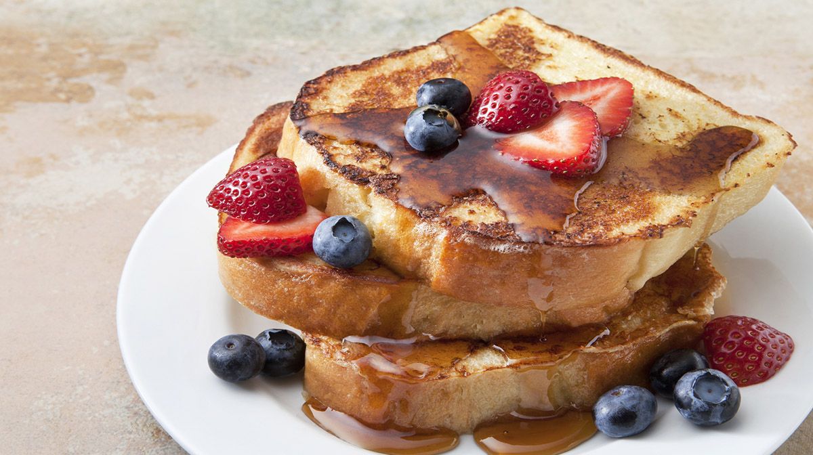

Pan Francés al Estilo Majomushi

Una receta fácil y rápida de preparar que le dará a tu desayuno un toque especial.
Ingredientes
Para 2 personas:
- 2 Huevos.
- 4 panes tajados.
- Miel, Syrup o Mermelada al gusto.
- Canela
- Fruta de su elección (sugiero banana en rodajas o fresas)
- Mantequilla
Preparación
- Vertir los huevos en un tazón, una pizca de sal y canela al gusto.
- Batir con un tenedor (Tip: agregar una cda de leche).
- Calentar la sarten y derretir una cda de mantequilla.
- (Opcional) Cortar el borde del pan.
- Remojar las tajadas de pan en la mezcla por ambos lados.
- Ponerlas en la sartén e ir volteandolas hasta que esten doradas.
- Servir con Miel o Mermelada y su fruta al gusto.